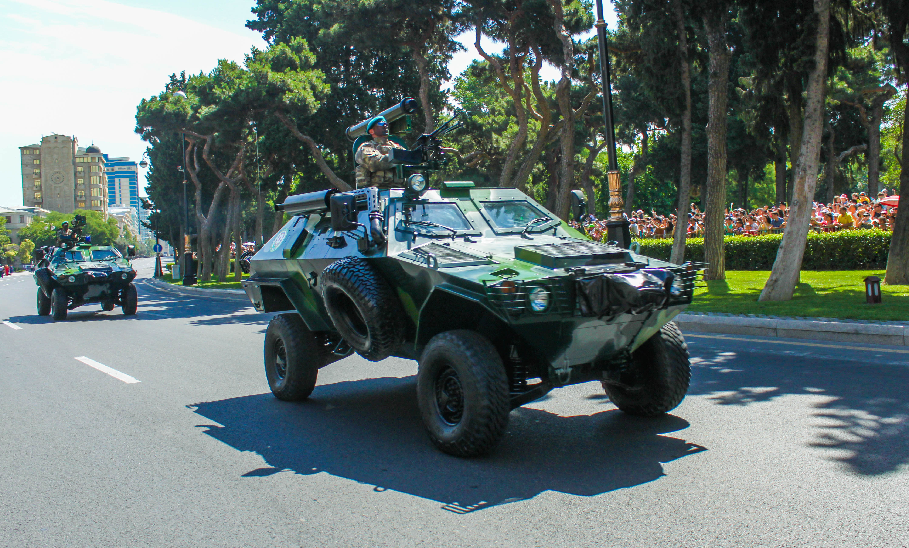
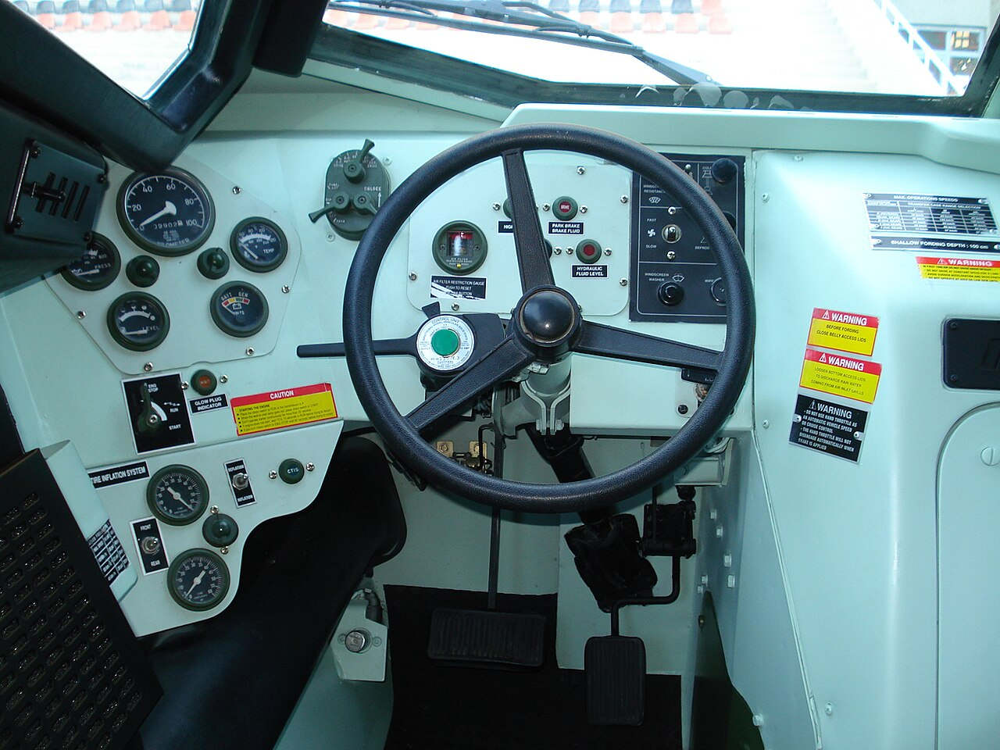
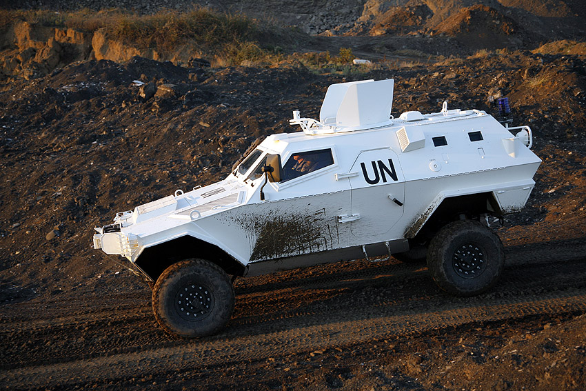

❮
❯
COBRA, Otokar tarafından geliştirilen 4x4 taktik tekerlekli zırhlı araçtır. Araç, zorlu arazi ve iklim koşullarında görev yapabilmesi, modüler gövde yapısı ve farklı görev paketlerine uyarlanabilmesi ile öne çıkar. Resmî broşürde personel taşıyıcı, ambulans, tanksavar platformu, keşif aracı, komuta kontrol aracı, iç güvenlik aracı, 20 mm top platformu ve NBC keşif aracı gibi çok sayıda görev varyantı listelenmektedir.
Otokar, COBRA’nın monokok gövde yapısının balistik korumayı artırdığını; optimize edilmiş gövde açıları sayesinde patlayıcı ve mayınlara karşı dikkate değer koruma sunduğunu belirtiyor. Broşürde ayrıca A/P ve A/T tipi mayınlara karşı koruma vurgulanıyor.
Araç; kalıcı 4x4 çekiş, otomatik şanzıman, merkezi lastik şişirme sistemi, run-flat lastikler, gece görüş periskopları ve amfibi seçenekleriyle çok yönlü bir taktik zırhlı platform olarak tasarlanmıştır.


